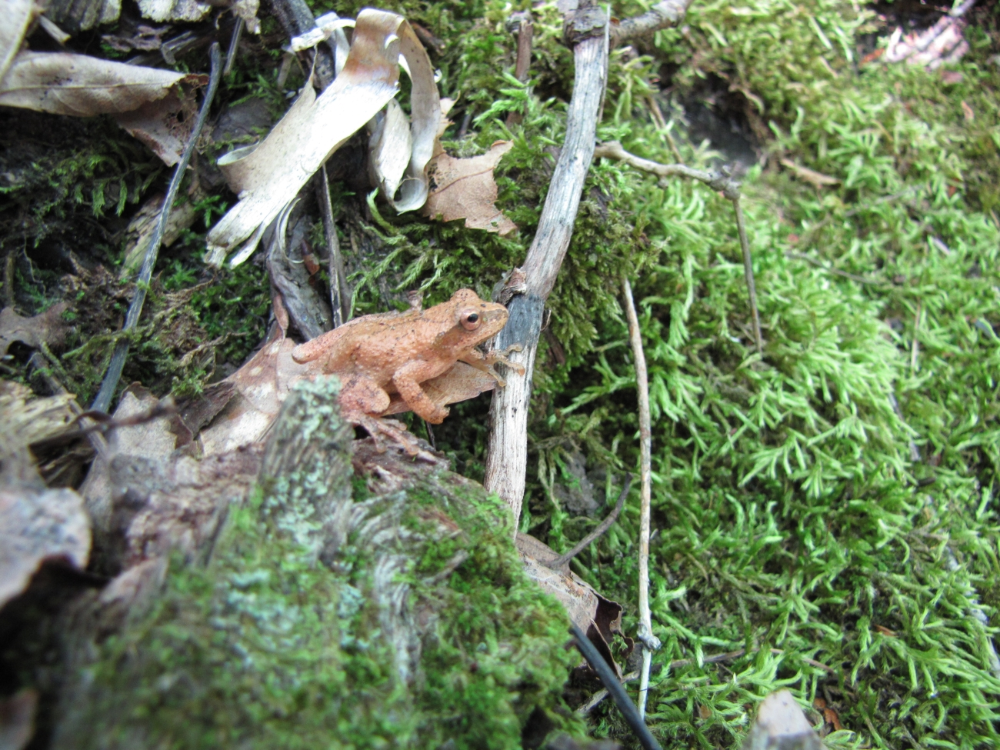

Week 12 · BIO597 Spatial Analysis of Biodiversity
Spatial trait-based ecology
Where do richness and functional diversity disagree? What processes can this tell us about?
Both communities have four species, but one has much higher functional diversity (trait variation).
How does environment and geography influence life history at the species and community level?
Which life-history strategies or traits occur along gradients of latitude, climate, and habitat?
Bergmann's rule: Larger bodied species found in colder environments (true for endotherms).
Compile amphibian trait data
Five traits describe size, maturity, and reproduction

American bullfrog

Red-backed salamander

Spring peeper
The trait table gives each species a life-history profile.
Scaling and standardizing for comparability
Make proportional changes comparable
Log10 makes proportional differences comparable; standardization gives each trait equal variance.
Here each point is a species.
The first spatial question
Where do community mean traits change?
Do colder or more disturbed places contain species with different body sizes, maturity ages, or clutch sizes?
Correlating environmental predictors with mean community traits
Which environmental gradients accompany shifts in mean traits?
Do any of these relationships look meaningful to you? How would you interpret these figures?
Here each point is a community average.
Summarizing trait variation w/in communities (Functional diversity)
Functional dispersion (FDis) is the mean distance to the multivariate trait centroid
In this cartoon the centroids of these two communities are identical
Species in the community on the right occupy a wider spread of the measured trait space, so it will have a larger FDis value
A worked example for ME amphibians
These two real communities have very different FDis values
The red star indicates the centroid in multivariate trait-space for the given community
An environmental filtering hypothesis
How might some aspect of the environment reduce trait variation within a community?
Would rapidly drying ponds contain a narrower range of development strategies than long-lasting ponds?
Testing the filtering hypothesis with trait randomization
Within each site: Shuffle rows of the trait dataframe; recalculate FDis; repeat 1000x
The distribution of FDis values can be used get a p-value for the observed FDis
Observed versus null distribution of FDis values
Is the observed functional dispersion significantly different from randomized FDis?
Is local trait spread smaller or greater than expected from the regional pool?
Separate the observation from its expectation
Where is trait clustering strongest relative to the regional pool?
Are colder or more disturbed cells more negative in SES, as a filtering hypothesis would predict?
A competition and coexistence question
Can resource partitioning help species coexist?
Could resource partitioning favor coexistence, while competitive dominance leaves species with similar strategies?
Turn a spatial pattern into a mechanism test
Does drying act directly, or through competition?
Measure survival, growth, and time to metamorphosis with and without competitors under both water treatments.
From maps to hypotheses
How do typical traits and trait spread change with latitude?
Compare geographic gradients in typical body size, trait spread, and departure from the null expectation.
Connect to taxonomic beta diversity
Do different species provide similar strategies?
Both pairs share no species, yet only one pair replaces the community’s life-history strategies.
Questions for a follow-up spatial analysis
Does functional turnover track distance or climate?
Compare the same community pairs in geographic, climate, species, and trait space.
Species profiles and community averages
PCA reveals shared life-history strategies
Nearby species have similar trait profiles. Nearby communities contain species with similar average traits.
A shared color key
Where do communities share similar life-history strategies?
Similar map colors identify communities with similar combinations of typical life-history traits.
Connecting traits to environment
Which gradients track community life-history strategies?
Use the ranking to identify associated gradients and the arrows to see how trait combinations change along them.
From Maine to California
Do California communities follow the same trait gradients?
Compare typical traits, trait spread, and environmental relationships using the prepared California communities.
Before opening the notebook
Which biological hypothesis would you test next?
Do short-season communities contain earlier-maturing species?
Are disturbed communities more clustered than their regional null?
Do species replacements retain the same strategies?
Name the trait, predict its response, and identify the observations or experiment that would test the mechanism.